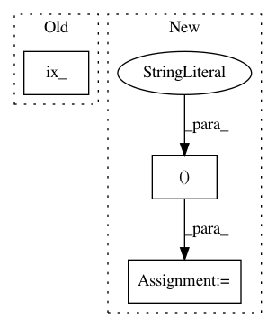

f5fc04d49bfd446086ff604cb9cad4f22fed02eb,pyhawkes/internals/network.py,GibbsSBM,resample_c,#GibbsSBM#Any#Any#,226
Before Change
c_temp[k] = ck
// p(A[k,k"] | c)
lp[ck] += Bernoulli(self.p[np.ix_([ck], c_temp)])\
.log_probability(A[k,:]).sum()
// p(W[k,k"] | c)
lp[ck] += A[k,k] * Gamma(self.kappa, self.v[np.ix_([ck], c_temp)])\
After Change
.log_probability(A[k,:]).sum()
// p(A[k",k] | c)
lp[ck] += Bernoulli(self.p[c_temp, ck])\
.log_probability(A[:,k]).sum()
// p(W[k,k"] | c)
lp[ck] += (A[k,:] * Gamma(self.kappa, self.v[ck, c_temp])\
.log_probability(W[k,:])).sum()
In pattern: SUPERPATTERN
Frequency: 3
Non-data size: 3
Instances
Project Name: slinderman/pyhawkes
Commit Name: f5fc04d49bfd446086ff604cb9cad4f22fed02eb
Time: 2015-01-26
Author: scott.linderman@gmail.com
File Name: pyhawkes/internals/network.py
Class Name: GibbsSBM
Method Name: resample_c
Project Name: epfl-lts2/pygsp
Commit Name: d8e610c04662817816d5d7cb5de2578cb48f3ddb
Time: 2015-12-09
Author: lionel.martin@epfl.ch
File Name: pygsp/graphs/graph.py
Class Name: Graph
Method Name: subgraph
Project Name: geomstats/geomstats
Commit Name: 5cc1974f060cc273bfe87abc270401bb9ccb297e
Time: 2019-08-25
Author: alice.le-brigant@enac.fr
File Name: geomstats/riemannian_metric.py
Class Name: RiemannianMetric
Method Name: optimal_quantization